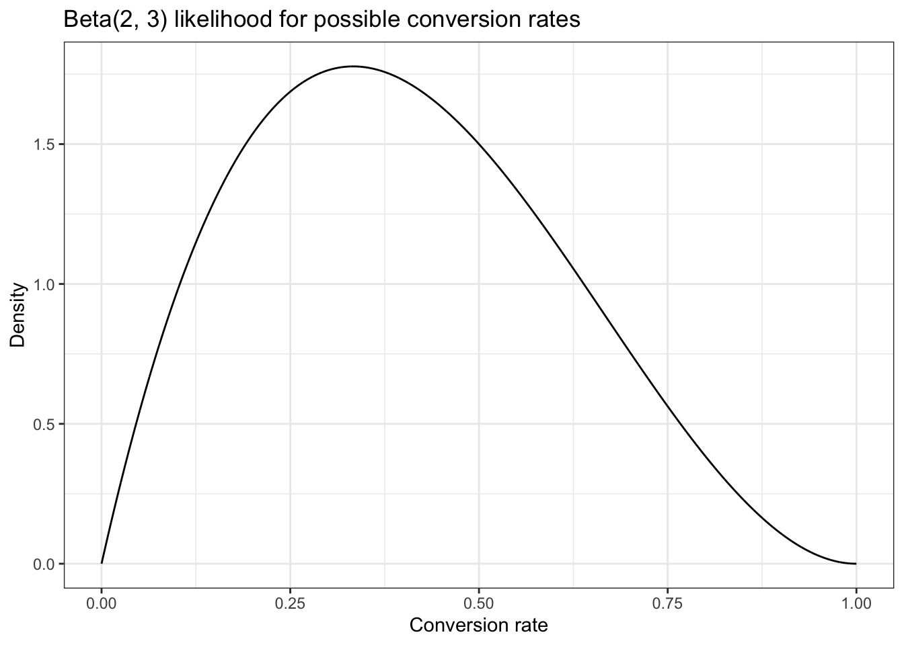
14 Parameter Estimation with Prior Probabilities
14.1 Predicting Email Conversion Rates
Our data so far tells us that of the first five people that open an email, two of them click the link.
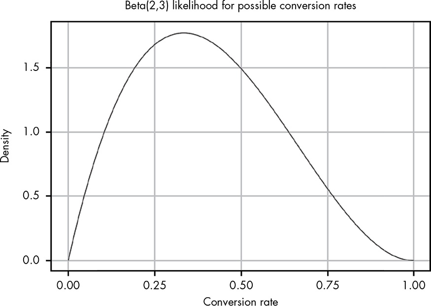
Unlike in the previous chapter, where we had a pretty narrow spike in possible values, here we have a huge range of possible values for the true conversion rate because we have very little information to work with.
The 95 percent confidence interval (i.e., a 95 percent chance that our true conversion rate is somewhere in that range) is marked to make it easier to see. At this point our data tells us that the true conversion rate could be anything between 0.05 and 0.8! This is a reflection of how little information we’ve actually acquired so far.
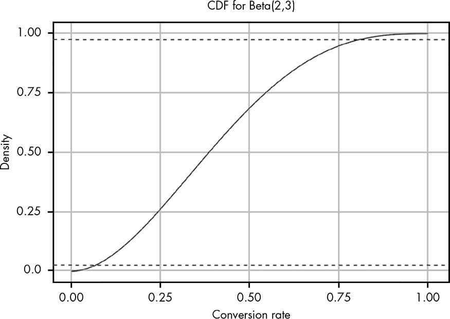
14.2 Taking in Wider Context with Priors
This data (80% conversion rate) seems unrealistic.
Let’s look at some wider context. For blogs listed in the same category as yours, the provider’s data claims that on average only 2.4 percent of people who open emails click through to the content.
We learned about producing the posterior probability (GLOSSARY) with the combination of prior probability (GLOSSARY) and likelihood (GLOSSARY) distribution in Chapter 9. The prior will change if new data (likelihood) come in. This process is called Bayesian updating (GLOSSARY).
As you know by now, in Bayesian terms the data we have observed is our likelihood, and the external context information—in this case from our personal experience and our email service—is our prior probability. Our challenge now is to figure out how to model our prior.
The conversion rate of 2.4 percent from your email provider gives us a starting point: now we know we want a beta distribution whose mean is roughly 0.024. (The mean of a beta distribution is $.) However, this still leaves us with a range of possible options: Beta(1,41), Beta(2,80), Beta(5,200), Beta(24,976), and so on. So which should we use? Let’s plot some of these out and see what they look like (see Figure 14.3).
Note
In the meanwhile I learned from (kruschke2014?) that the calculation of different forms of the beta distribution is very important to model your prior beliefs. I think there are several R packages and Kruschke is also offering some scripts for this task. It also important to get a general impression how \(\alpha\) and \(\beta\) work together to form very different beta distribution.
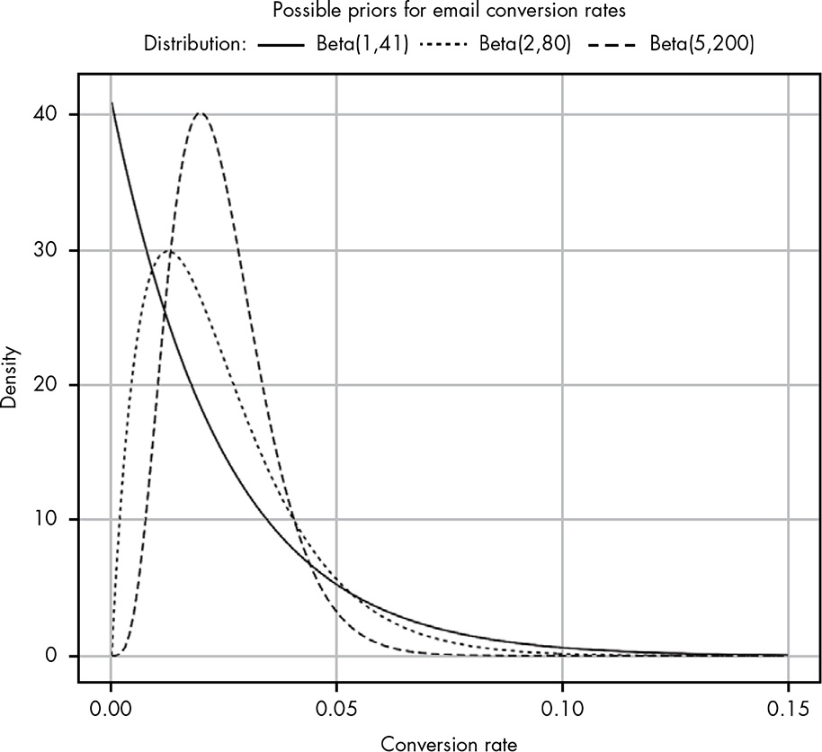
Important
The lower the combined \(\alpha + \beta\), the wider our distribution.
The problem now is that even the most liberal option we have, Beta(1,41), seems a little too pessimistic, as it puts a lot of our probability density in very low values. We’ll stick with this distribution nonetheless, since it is based on the 2.4 percent conversion rate in the data from the email provider, and is the weakest of our priors.
Why not use Beta(2, 80)? It is not so weak but still not very commiting. In my opinion it seems better providing the 2.4 percent conversion rate.
we can calculate our posterior distribution (the combination of our likelihood and our prior) by simply adding together the parameters for the two beta distributions:
\[ \begin{align*} Beta(\alpha_{posterior}, \beta_{posterior}) = Beta(\alpha_{likelihood} + \alpha_{prior}, \beta_{likelihood} + \beta_{prior}) \end{align*} \tag{14.1}\]
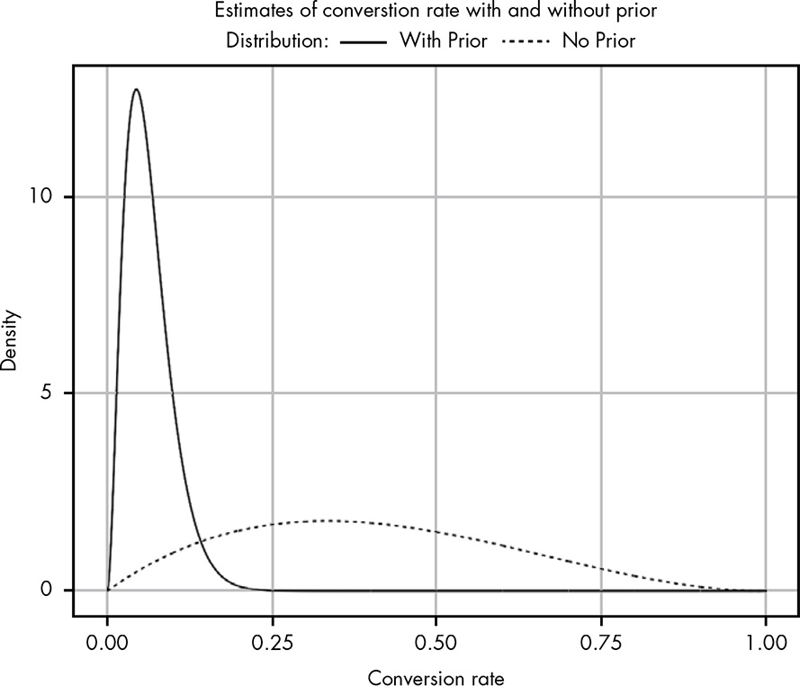
This is a big surprise!
Even though we’re working with a relatively weak prior, we can see that it has made a huge impact on what we believe are realistic conversion rates. Notice that for the likelihood with no prior, we have some belief that our conversion rate could be as high as 80 percent. … Adding a prior to our likelihood adjusts our beliefs so that they become much more reasonable. But I still think our updated beliefs are a bit pessimistic.
We wait a few hours to gather more results and now find that out of 100 people who opened your email, 25 have clicked the link!
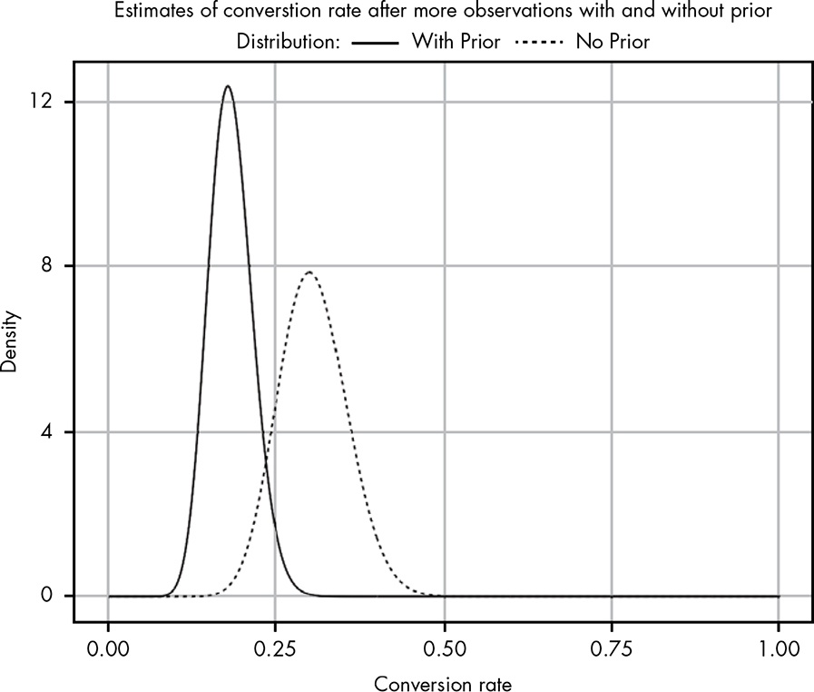
In the morning we find that 300 subscribers have opened their email, and 86 of those have clicked through. Figure 14.6 shows our updated beliefs.
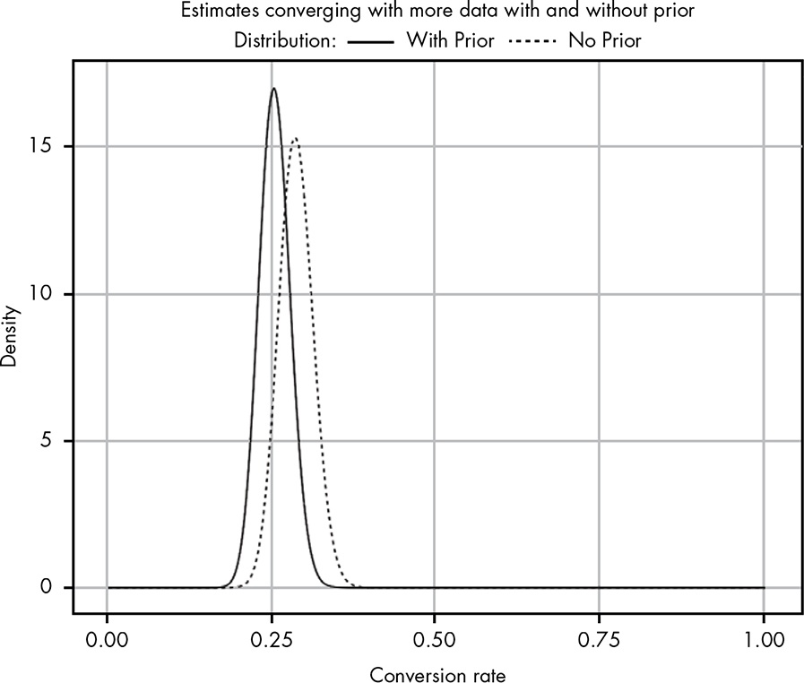
Now the two curves are side by side. The likelihood curve is still more optimistic but the difference to the posterior probability is relatively small by visual inspection (about 30% versus 25%).
14.3 Prior as a Means of Quantifying Experience
14.3.1 Is There a Fair Prior to Use When We Know Nothing?
Will Kurt’s answer is: No!
In the absence of sufficient data and any prior information, your only honest option is to throw your hands in the air and tell your friend, “I have no clue how to even reason about that question!”
In the literature there is much talk about a **non-informative prior (GLOSSARY) with \(Beta(1,1)\)
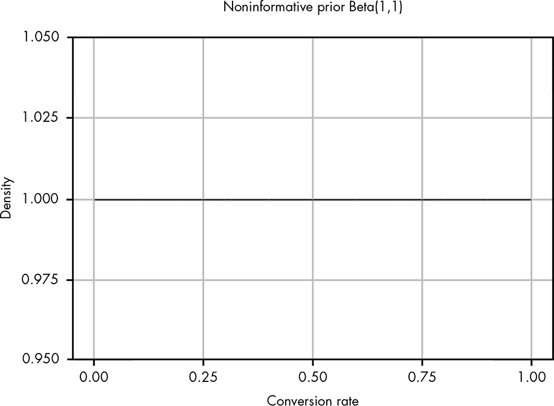
As you can see, this is a perfectly straight line, so that all outcomes are then equally likely and the mean likelihood is 0.5.
\[\text{mean of likelihood} = \frac{\alpha}{\alpha + \beta} = \frac{1}{1 + 1} = \frac{1}{2} = 0.5 \tag{14.2}\]
Note
There is much discussion on this topic. People arguing that there is not such thing as a non-informative prior. I want not to go into further details here.
A Beta(1,1) prior is sometimes used in practice, but you should use it only when you earnestly believe that the two possible outcomes are, as far as you know, equally likely.
14.4 Wrapping Up
Whenever possible, it’s best to use a prior probability distribution based on actual data. However, often we won’t have data to support our problem, but we either have personal experience or can turn to experts who do. In these cases, it’s perfectly fine to estimate a probability distribution that corresponds to your intuition. Even if you’re wrong, you’ll be wrong in a way that is recorded quantitatively. Most important, even if your prior is wrong, it will eventually be overruled by data as you collect more observations.
14.5 Exercises
Try answering the following questions to see how well you understand priors. The solutions can be found at https://nostarch.com/learnbayes/.
14.5.1 Exercise 14-1
Suppose you’re playing air hockey with some friends and flip a coin to see who starts with the puck. After playing 12 times, you realize that the friend who brings the coin almost always seems to go first: 9 out of 12 times. Some of your other friends start to get suspicious. Define prior probability distributions for the following beliefs: - One person who weakly believes that the friend is cheating and the true rate of coming up heads is closer to 70 percent. - One person who very strongly trusts that the coin is fair and provided a 50 percent chance of coming up heads. - One person who strongly believes the coin is biased to come up heads 70 percent of the time.
14.5.2 Exercise 14-2
To test the coin, you flip it 20 more times and get 9 heads and 11 tails. Using the priors you calculated in the previous question, what are the updated posterior beliefs in the true rate of flipping a heads in terms of the 95 percent confidence interval?
14.6 Experiments
14.6.1 Replicate Figure 14-1
Hover the cursor over Figure 14.1 to compare both plots!
14.6.2 Replicate Figure 14-2
Hover the cursor over Figure 14.2 to compare both plots!
tibble::tibble(x = seq(0, 1, .0001),
y = pbeta(x, 2, 3)) |>
ggplot2::ggplot(ggplot2::aes(x = x, y = y)) +
ggplot2::geom_line() +
ggplot2::geom_segment(
ggplot2::aes(x = 0, y = 0.025, xend = 1, yend = 0.025),
linewidth = 0.4, linetype = "dashed", color = "steelblue") +
ggplot2::geom_segment(
ggplot2::aes(x = 0, y = 0.975, xend = 1, yend = 0.975),
linewidth = 0.4, linetype = "dashed", color = "steelblue") +
ggplot2::theme_bw() +
ggplot2::labs(
title = "CDF for Beta(2, 3)",
x = "Conversion rate",
y = "Density"
)Warning in ggplot2::geom_segment(ggplot2::aes(x = 0, y = 0.025, xend = 1, : All aesthetics have length 1, but the data has 10001 rows.
ℹ Please consider using `annotate()` or provide this layer with data containing
a single row.Warning in ggplot2::geom_segment(ggplot2::aes(x = 0, y = 0.975, xend = 1, : All aesthetics have length 1, but the data has 10001 rows.
ℹ Please consider using `annotate()` or provide this layer with data containing
a single row.
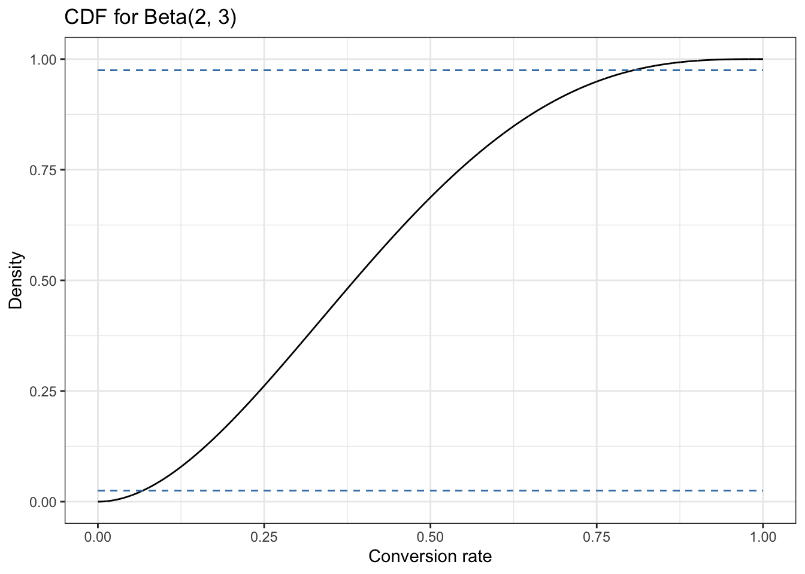
14.6.3 Replicate Figure 14-3
Hover the cursor over Figure 14.3 to compare both plots!
tibble::tibble(x = seq(0, 0.15, .0001),
y1 = dbeta(x, 1, 41),
y2 = dbeta(x, 2, 80),
y3 = dbeta(x, 5, 200)) |>
ggplot2::ggplot() +
ggplot2::geom_line(ggplot2::aes(x = x, y = y1, color = "Beta(1, 41)"), linewidth = 1.0) +
ggplot2::geom_line(ggplot2::aes(x = x, y = y2, color = "Beta(2, 80)"), linewidth = 1.0) +
ggplot2::geom_line(ggplot2::aes(x = x, y = y3, color = "Beta(5, 200)"), linewidth = 1.0) +
ggplot2::theme_bw() +
ggplot2::theme(legend.position = "top") +
ggplot2::scale_color_manual(name = "Distributions:",
values = c("Beta(1, 41)" = "red",
"Beta(2, 80)" = "blue",
"Beta(5, 200)" = "black")) +
ggplot2::labs(
title = "Possible priors for email conversion rate",
x = "Conversion rate",
y = "Density"
)
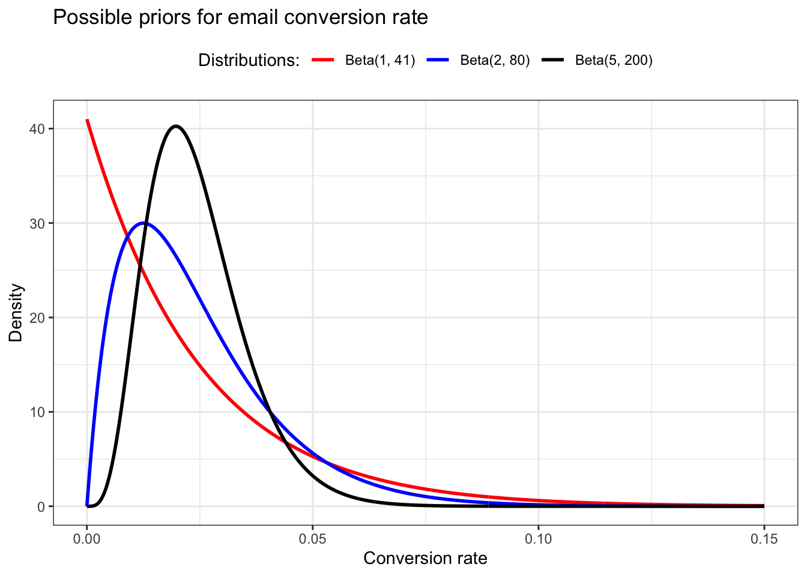
14.6.4 Replicate Figure 14-4
We need to calculate the posterior distribution (the combination of our likelihood and our prior) by simply adding together the parameters for the two beta distributions. Remember: We started with five people that opened the email, where two of them click the link we provided.
We are going to use Equation 14.1 to compute the posterior distribution.
\[ \begin{align*} Beta(\alpha_{posterior}, \beta_{posterior}) = Beta(\alpha_{likelihood} + \alpha_{prior}, \beta_{likelihood} + \beta_{prior}) \\ Beta(\alpha_{posterior}, \beta_{posterior}) = Beta(2 + 1, 3 + 41) = Beta(3, 44) \\ Beta(\alpha_{likelihood} + \beta_{likelihood}) = Beta(2, 3) \end{align*} \tag{14.3}\]
Summarized we got:
- Prior: Beta(1,41)
- Likelihood: Beta(2, 3)
- Posterior: Beta(2 + 1, 3 + 41) = Beta(3, 44)
Hover the cursor over Figure 14.4 to compare both plots!
tibble::tibble(x = seq(0, 1, .0001),
y1 = dbeta(x, 2, 3),
y2 = dbeta(x, 3, 44)) |>
ggplot2::ggplot() +
ggplot2::geom_line(ggplot2::aes(x = x, y = y1, color = "No prior"), linewidth = 1.0) +
ggplot2::geom_line(ggplot2::aes(x = x, y = y2, color = "With prior"), linewidth = 1.0) +
ggplot2::theme_bw() +
ggplot2::theme(legend.position = "top") +
ggplot2::scale_color_manual(name = "Distributions:",
values = c("With prior" = "black",
"No prior" = "red")) +
ggplot2::guides(colour = ggplot2::guide_legend(reverse = TRUE)) +
ggplot2::labs(
title = "Estimates of conversion rate with and without prior",
x = "Conversion rate",
y = "Density"
)
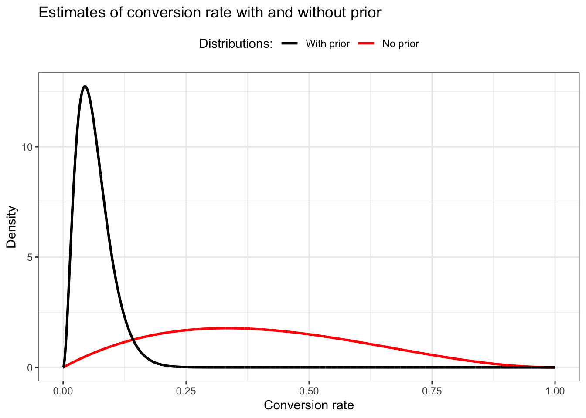
14.6.5 Replicate Figure 14-5
We wait a few hours to gather more results and now find that out of 100 people who opened your email, 25 have clicked the link!
I interpret these figures as the total of people, e.g, including the 5 people from the first count.
This time our new prior is the previous posterior and we are have to add the new prior to the new likelihood:
- New prior is the previous posterior: Beta(3, 44)
- New Likelihood: Beta(25, 75)
- New Posterior: Beta(25 + 3, 75 + 44) = Beta(28, 119)
Hover the cursor over Figure 14.5 to compare both plots!
tibble::tibble(x = seq(0, 1, .0001),
y1 = dbeta(x, 25, 75),
y2 = dbeta(x, 28, 119)) |>
ggplot2::ggplot() +
ggplot2::geom_line(ggplot2::aes(x = x, y = y1, color = "No prior"), linewidth = 1.0) +
ggplot2::geom_line(ggplot2::aes(x = x, y = y2, color = "With prior"), linewidth = 1.0) +
ggplot2::theme_bw() +
ggplot2::theme(legend.position = "top") +
ggplot2::scale_color_manual(name = "Distributions:",
values = c("With prior" = "black",
"No prior" = "red")) +
ggplot2::guides(colour = ggplot2::guide_legend(reverse = TRUE)) +
ggplot2::labs(
title = "Estimates of conversion rate with and without prior",
x = "Conversion rate",
y = "Density"
)
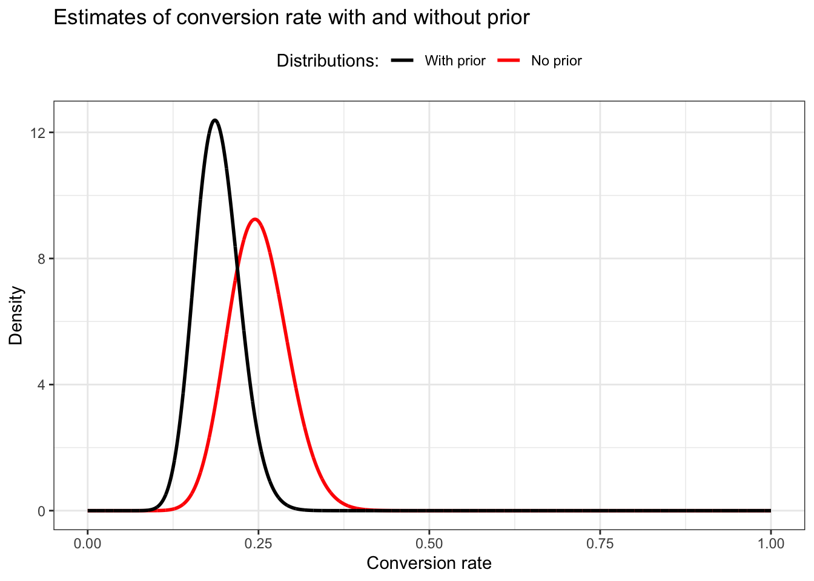
Warning
The red beta distribution without prior does not conform to Figure 14.5. The spike should be around 0.30 and should be just under density 8. But as far as I understand my calculation is correct. I would get a similar distribution with Beta around (25, 57), but I do not know how to get this result. My relation is \(25 / 75 = 0.33\) but should have a relation of about \(25 / 57 = 0.44\). I do not know how to produce this relation with an arguable calculation. Even a total of 105 people with a Beta(27, 78) would not change much (0.35)
14.6.6 Replicate Figure 14-6
In the morning we find that 300 subscribers have opened their email, and 86 of those have clicked through.
I will stick with my calculation procedure, even if I do not get exact the same result as in the book.
- New prior is the previous posterior: Beta(28, 119)
- New Likelihood: Beta(86, 214)
- New Posterior: Beta(86 + 28, 214 + 119) = Beta(114, 333)
Hover the cursor over Figure 14.6 to compare both plots!
tibble::tibble(x = seq(0, 1, .0001),
y1 = dbeta(x, 86, 214),
y2 = dbeta(x, 114, 333)) |>
ggplot2::ggplot() +
ggplot2::geom_line(ggplot2::aes(x = x, y = y1, color = "No prior"), linewidth = 1.0) +
ggplot2::geom_line(ggplot2::aes(x = x, y = y2, color = "Width prior"), linewidth = 1.0) +
ggplot2::theme_bw() +
ggplot2::theme(legend.position = "top") +
ggplot2::scale_color_manual(name = "Distributions:",
values = c("Width prior" = "black",
"No prior" = "red")) +
ggplot2::guides(colour = ggplot2::guide_legend(reverse = TRUE)) +
ggplot2::labs(
title = "Estimates of conversion rate with and without prior",
x = "Conversion rate",
y = "Density"
)
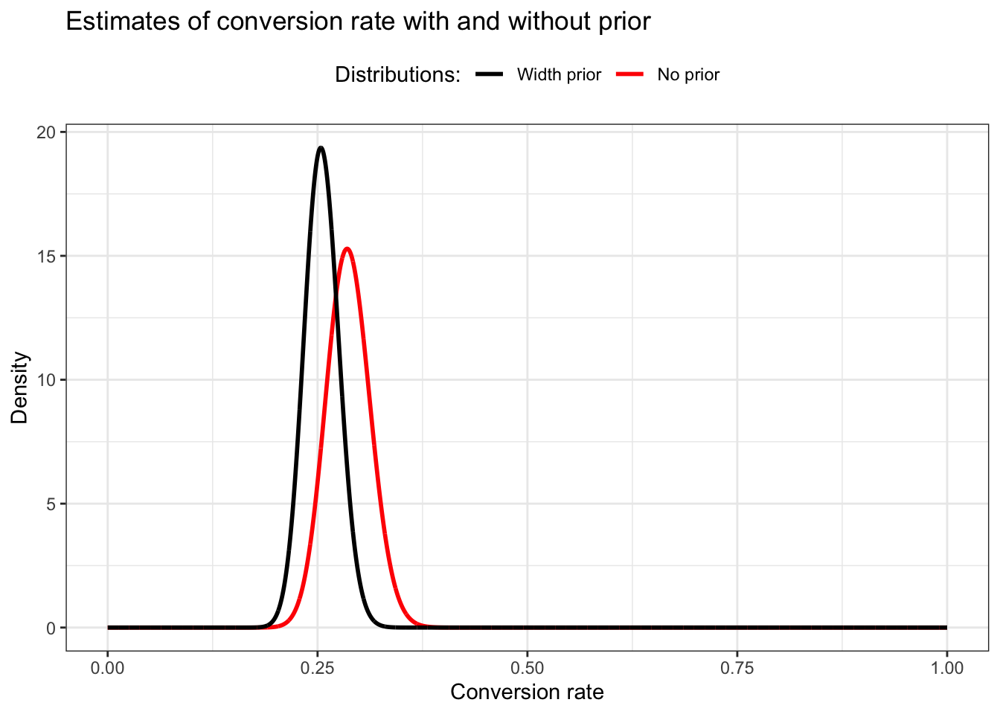
This time my graph looks pretty similar as Figure 14.6!
14.6.7 Replicate Figure 14-7
Hover the cursor over Figure 14.7 to compare both plots!
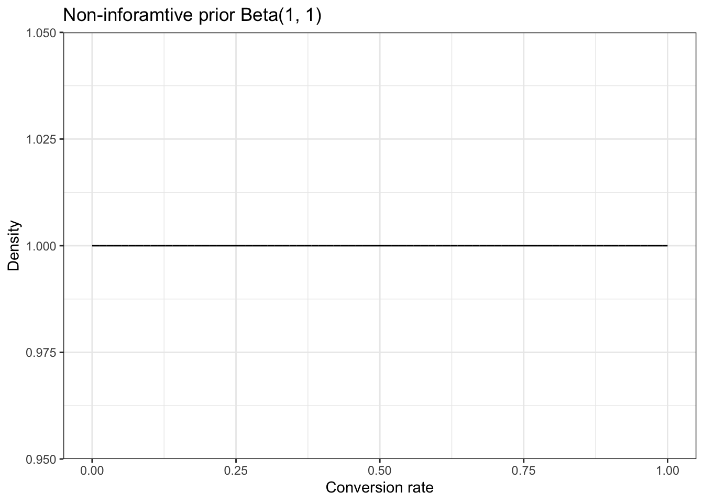
Drawing a straight line is also done with dunif(x, min = 0, max = 1) (= the uniform distribution). As min = 0, max = 1are the default values you just can say dunif(x) as Figure 14.15 demonstrates:
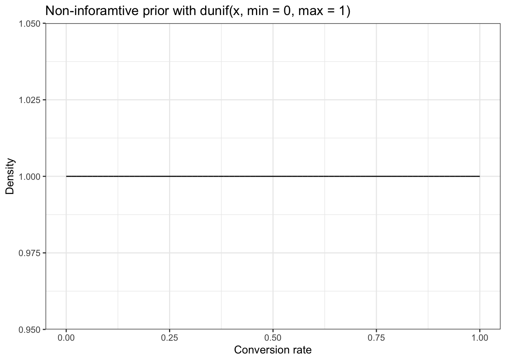